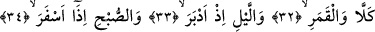
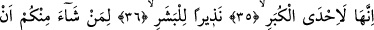
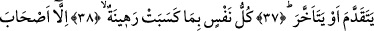
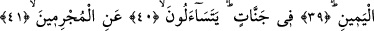
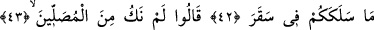
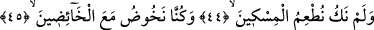
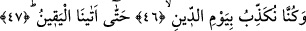

SİZİ
ŞU YAKICI ATEŞE
SOKAN NEDİR?
32. Hayır hayır (öğüt almazlar). Aya andolsun ki,
33. Dönüp gitmekte olan geceye,
34. Ağarmakta olan sabaha andolsun ki,
35. O (cehennem) büyük musîbetlerden biridir:
36. İnsanlık için bir uyarıcıdır.
37. Sizden ileri gitmek ya da geri kalmak isteyen kimseler için.
38. Her nefis, yaptıklarına karşılık bir rehindir;
39. Ancak sağdakiler başka.
40. Onlar cennetler içindedir.
41. Günahkârlara uzaktan uzağa sorarlar.
42. Sizi şu yakıcı ateşe sokan nedir?
43. Onlar şöyle cevap verirler: Biz namaz kılanlardan değildik,
44. Yoksulu doyurmuyorduk,
45. (Bâtıla) dalanlarla birlikte dalıyorduk,
46. Cezâ gününü de yalan sayıyorduk,
47. Sonunda bize ölüm geldi çattı.
“Hayır, hayır” Bu ifâde sekarı inkâr eden kişiyi red ve azarlama anlamınadır. Bir
başka ifâdeyle burada inkârcıya sekar’ı inkârdan uzak dur; çünkü o haktır, anlamınadır.
Ya da hayır hayır anlamına gelen “kella” bir inkârdır ve olumsuzluk edâtıdır. Yâni
sekarın anlatılması ve vasıfları onlar için birer öğüt değildir, anlamınadır. Bunların
insanoğluna birer öğüt olması onların içinden bâzılarının bu öğütü almamaları ile
çelişmez. O zaman -bu ikinci tefsire göre- sekarın anlatılması ve vasıfları onlar için